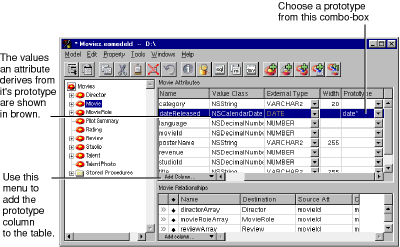
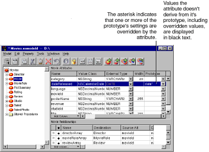

Table of Contents
Table of Contents  Previous Section
Previous Section
Prototype Attributes
To allow easier model creation from scratch, EOModeler supports the concept of prototype attributes. Prototype attributes are just what they sound like - special attributes from which other attributes derive their settings. A prototype can specify any of the characteristics you normally define for an attribute. When you create an attribute, you can associate it with one of these prototypes, and the attribute's characteristics are then set from the prototype definition. Assigning a Prototype to an Attribute
To associate an attribute with a prototype, use the table mode of the Model Editor. Simply choose a prototype from the combo box in the Prototype column as shown in Figure 22. If EOModeler isn't displaying the Prototype column, activate it from the Add Column menu.

Figure 22. Assigning a Prototype to an Attribute

Figure 23. Overriding Prototype Settings
Creating Prototype Attributes
The prototypes you can assign to an attribute come from three places:
When resolving a prototype name, Enterprise Objects Framework looks for prototypes in EO<AdaptorName>Prototypes, then in EOPrototypes, and finally in the adaptor for your model. This search path allows you to override the prototypes provided by each adaptor. Furthermore, if you don't want to use the adaptor-defined prototypes at all, you can hide them. Create an entity named EOPrototypesToHide. For each prototype you want to hide, create an attribute with that name; you don't need to specify other attribute properties.
Table of Contents  Next Section
Next Section